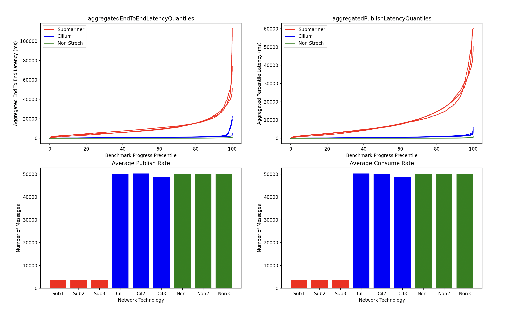

Performance Testing
Open messaging benchmark framework
The Open Messaging Benchmark framework was used to benchmark the stretch Kafka clusters. By following this tutorial, we obtained benchmark results for three configurations:
- Regular Kafka cluster
- Stretch cluster with Submariner
- Stretch cluster with Cilium
The Open messaging benchmark framework deploys 8 benchmark workers and one driver in the K8s environment. Once the tests start, the driver employs the workers to produce/consume messages to the cluster using its bootstrap url.
Configuration
For the stretch cluster configurations, the OpenShift (OCP)/K8s clusters were located in the same data centers, minimizing network latency and focusing on the additional latency introduced by the networking tools in use.
Regular Kafka cluster
We used a regular Kraft Kafka cluster with three brokers, three controllers, and ephemeral storage. This Custom Resource (CR) was applied in an OCP environment.
apiVersion: kafka.strimzi.io/v1beta2
kind: KafkaNodePool
metadata:
name: controller
labels:
strimzi.io/cluster: my-cluster
spec:
replicas: 3
roles:
- controller
storage:
type: jbod
volumes:
- id: 0
type: ephemeral
kraftMetadata: shared
---
apiVersion: kafka.strimzi.io/v1beta2
kind: KafkaNodePool
metadata:
name: broker
labels:
strimzi.io/cluster: my-cluster
spec:
replicas: 3
roles:
- broker
storage:
type: jbod
volumes:
- id: 0
type: ephemeral
kraftMetadata: shared
---
apiVersion: kafka.strimzi.io/v1beta2
kind: Kafka
metadata:
name: my-cluster
annotations:
strimzi.io/node-pools: enabled
strimzi.io/kraft: enabled
spec:
kafka:
version: 3.8.0
metadataVersion: 3.8-IV0
listeners:
- name: plain
port: 9092
type: internal
tls: false
- name: tls
port: 9093
type: internal
tls: true
config:
offsets.topic.replication.factor: 3
transaction.state.log.replication.factor: 3
transaction.state.log.min.isr: 2
default.replication.factor: 3
min.insync.replicas: 2
entityOperator:
topicOperator: {}
userOperator: {}
Stretch cluster with Submariner
The Kafka cluster was deployed across three OCP environments, each hosting three brokers and three controllers. As with the regular Kafka cluster, we used ephemeral storage. Submariner was deployed on all three clusters and connected using the subctl binary.
The CR for this can be found under the Deploying Strimzi in Stretch Mode page.
Stretched kafka cluster with Cilium
Three K8s clusters were connected using the Cilium cli and then stretch cluster was created on this setup using the CR similar to that of Submariner with 3 brokers and 3 controllers.
Findings
Three test iterations were performed for each environment to eliminate environmental noise. The results were exported as JSON files and plotted using Matplotlib. The following four parameters were analyzed:
- Publish Delay (ms)
- End to end Delay (ms)
- Publish Rate (messages/sec)
- Consume Rate (messages/sec)
The results were stored in directories named non-stretch, stretch-cilium, and stretch-submariner.
The plotted results are shown below:  Each color in the graph represents the three test iterations for each configuration
Conclusion
The results indicate that:
- The stretched Kafka cluster with Submariner introduces significant additional latency, making it less comparable to the regular Kafka cluster.
- The stretched Kafka cluster with Cilium provides performance levels comparable to the regular Kafka cluster.